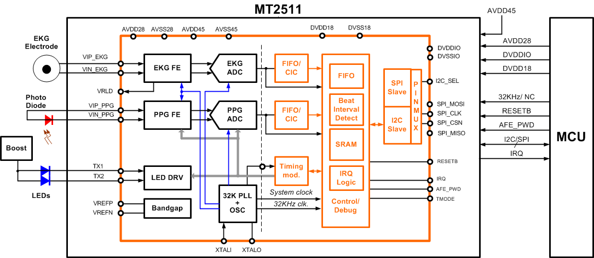

MT2511
概述
联发科技 MT2511 是一个为健康与健身设备而设计的生物感应模拟前端（analog front-end）芯片。MT2511 能以高感度和高采样频率，同时收集心电图（EKG）和光电容积脉搏波（PPG）发出的生物信号。
主要特点
-
二合一（PPG 与 EKG），含电流与电压传感的生物传感模拟前端（AFE）
-
封装：3.1 mm x 3.4 mm WLCSP
-
内置心跳间隔侦测电路以及 SRAM，可最佳化睡眠时心律监控的功耗
-
内置振荡器，可透过外置晶体提供高精度的时钟
-
可动态关闭电源，具备有弹性的时间控制以节约电源。
-
针对 EKG 监测，提供 Two-electrode (2E) 模式与 right leg drive (RLD) 模式
-
超低功耗
EKG 信道提供 two-electrode (2E) 模式与 right leg drive (RLD) 模式，在人体与电路间作为缓冲暂存。它集成了 programmable gain amplifier (PGA)、right leg drive amplifier，以及一个可传感并数字化 EKG 信号的 24-bit sigma-delta 模拟数字转换器(ADC)。
PPG 信道区分为接收端（RX）与发送端（TX）。TX 端含有 LED 驱动器。透过驱动器与外部升压组件，可点亮外部 LED 并提供 LED 所需的电压控制。由 LED 发出的光线，穿透或从皮肤反射回来，由光电二极管与 RX 端接收。RX 端包含一个 trans-impedance amplifier (TIA)、programmable gain amplifier (PGA)、ambient digital-to-analog converter (DAC)，以及一个 24-bit incremental ADC，可将接收到的信号增幅并转换为数字信号。
MT2511 内置对 PPG 信号进行心跳间隔估算的电路以及 SRAM，可最佳化睡眠时心率监控的电源功耗。此功能可让搭配 MT2511 的外部单片机，处于闲置模式长达四分钟，且不需要补正因人体移动而引起的误差。
